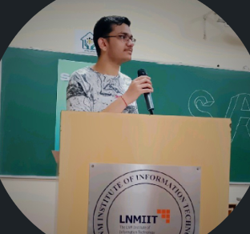

Profile Picture

SUMMARY
I am currently a second year student pursuing Computer Science Engineering as my major.
I have a deep curiosity about how the Machine Learning Algorithms work, especially in relation with the field of Finance and also interested in Development.
My favourite past times include watching Cricket and Reading Self Growth Books.
EDUCATION
- The Bishop's CO-ED School (Nursery - class 10)
- Arihant College(Class 11 & 12)
- LNMIIT(UG - CSE)
WORK EXPERIENCE
- Sankalp Club (Social and Culltural Club of LNMIIT) - Lead
- Mathongo - Content Development Intern
- PR - VIVACITY
SKILLS
- Python
- Team Management and Leadership
- Time Management
- Communication
- ML/AI
- Web Development
CONTACT DETAILS
HOBBIES